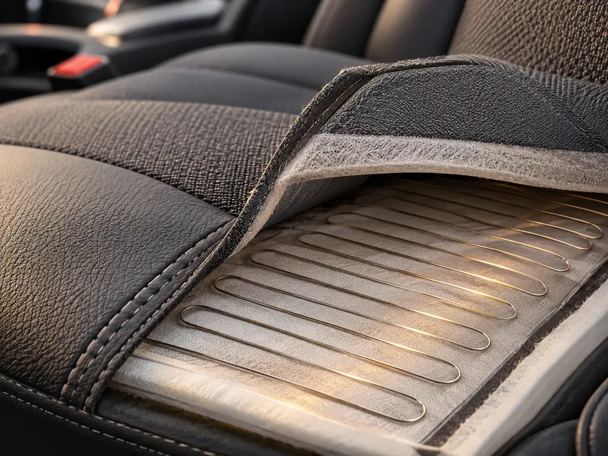
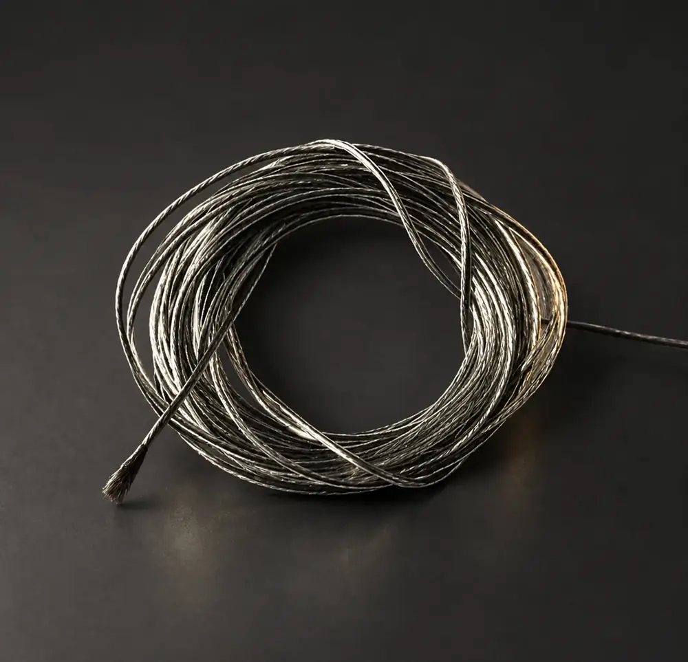
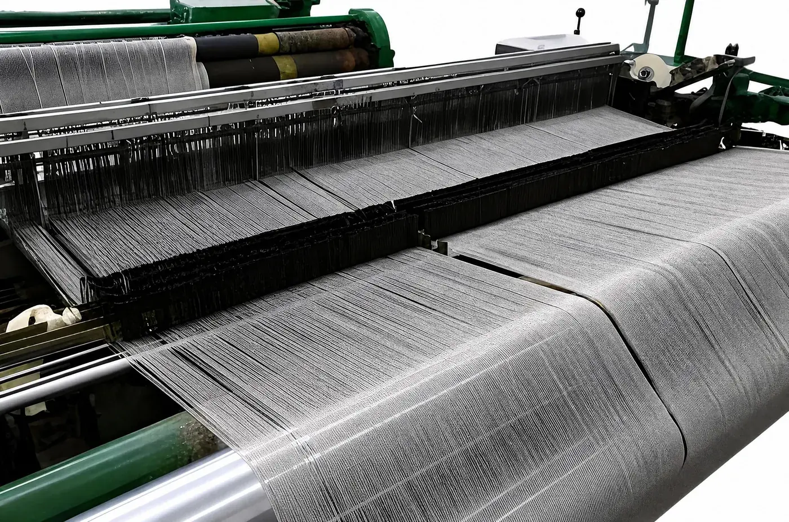
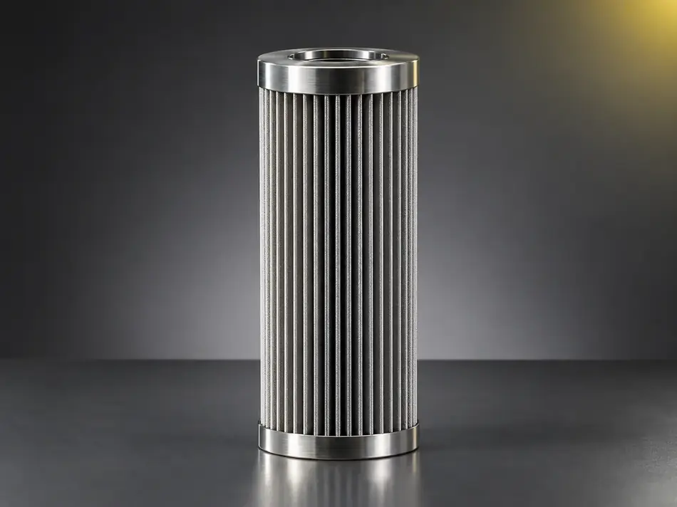

From glass forming to seat heating — stable metal fiber materials that improve component consistency.
What this solution is for
- Hot bending mould cover materials have a short life, and forming marks affect the appearance of the glass.
- Heating wire resistance is unstable, heat is uneven, and wires break after repeated flexing.
- Friction materials and exhaust treatment components need heat- and wear-resistant reinforcing fiber.
- Component suppliers need materials that stay stable and batch-consistent over a long programme.
| Item | Detail |
|---|---|
| Target buyers | Automotive glass forming plants · seat heating and wiring harness suppliers · brake pad makers · exhaust after-treatment and hydraulic component manufacturers |
| Typical conditions | Automotive glass hot bending, seat and steering-wheel heating, friction materials, diesel exhaust treatment, hydraulic system filtration |
| Lead products | Metal fiber woven cloth · insulated heating wire · chopped fiber · sintered porous media · hydraulic elements |
| How it is verified | Sample trial, bench testing, component qualification |
Priority order
Who we serve first, and why
| Priority | Buyer type | Why |
|---|---|---|
| A | Automotive glass forming plants | Shares products with the glass processing solution, so it is the fastest entry point |
| B | Seat heating and wiring harness suppliers; brake pad makers | Insulated heating wire and chopped fiber match their needs closely |
| C | Exhaust after-treatment and hydraulic component makers | Long qualification cycles, pursued in a second phase |
Product fit
Candidate products and selection logic
Candidates are a starting point. Final suitability depends on your exact conditions, so we confirm it with samples and testing rather than on paper.
| Application | Candidate products | Selection logic |
|---|---|---|
| Hot bending mould covers for automotive glass | Metal fiber woven cloth — plain or twill — and metal fiber tape | Heat resistant, breathable and ductile; reduces forming marks |
| Seat and steering-wheel heating | Insulated heating wire and metal fiber thread | Stable resistance and even heat; the insulation allows the wire to be sewn directly and survive repeated bending |
| Friction materials | Chopped metal fiber | Reinforces the matrix, conducts heat away and improves high-temperature stability |
| Exhaust after-treatment | Sintered porous media and porous plate | Heat resistant and able to act as a catalyst substrate |
| Hydraulic and lubrication filtration | Pleated elements and metal mesh sintered elements | High-pressure capable and suitable for back-flushing |
How we work together
- We support the sample qualification process used by component suppliers, and provide material parameters and test data.
- Heating wire resistance, wire diameter and insulation material are specified to your design.
What buyers verify
- Service life of the mould cover fabric and the appearance pass rate of the glass.
- Resistance tolerance, flex cycles and insulation performance of the heating wire.
- Batch consistency and long-term supply capability.
From bending moulds for automotive glass to heated seats and friction materials, metal fiber does jobs that ordinary fibers cannot. QL supplies stainless steel fiber fabrics for glass bending mould covers, insulated heating wire with stable resistance for seat and steering-wheel heating, chopped fiber for friction materials, and sintered porous media for exhaust treatment. Tell us your part and specification — we will match the material and support your validation.
In service
Products and applications




Tell us your conditions
Send us your operating conditions, and we will send samples.
Temperature, medium, pressure, filtration rating, resistance or porosity — give us the numbers you work with and our engineers will recommend a configuration, quote it and arrange samples for your own testing.